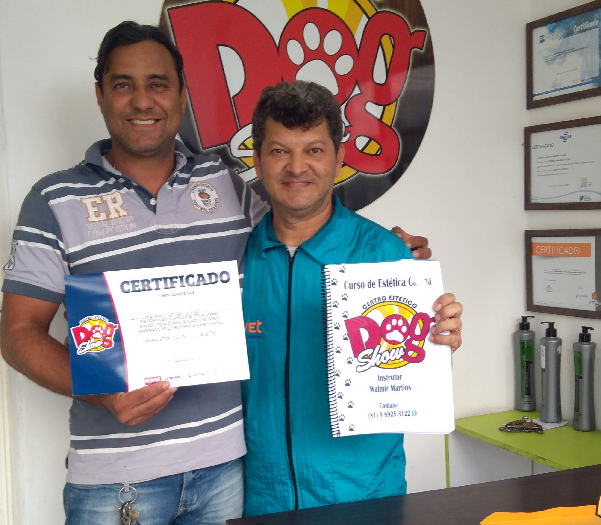
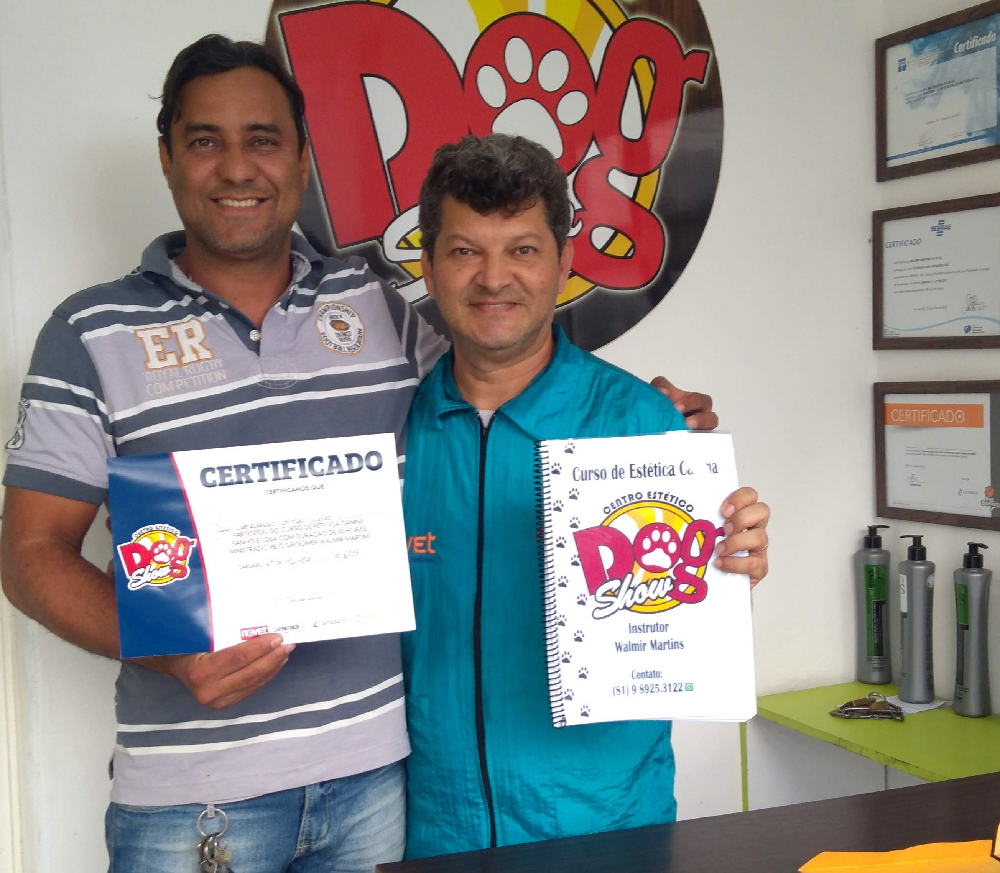

EMPRESA
Com mais de 30 anos de experiência, Temos o objetivo de sempre com carinho e dedicação trazer serviços e produtos com qualidade. e que eles tenham bons momentos.
A melhor experiência do seu filho!
Com mais de 30 anos de experiência, Temos o objetivo de sempre com carinho e dedicação trazer serviços e produtos com qualidade. e que eles tenham bons momentos.
"O espaço do banho e tosa foi construído para que os tutores dos pets possam visualizar seus animais em tempo integral e acompanhar o cuidado, o carinho e o respeito que os profissionais do local possuem com o animal de estimação durante todo o serviço prestado. Os banhistas e tosadores são capacitados para cuidar de cães e gatos, independente do comportamento, deixando o animal seguro e à vontade. Além disso, as instalações são limpas e desinfetadas de acordo com as normas de boas práticas de assepsia em relação ao ambiente e os materiais utilizados. "


A DOG SHOW, conta com profissional especializado para garantir a qualidade e segurança na hora do banho, equipamentos e produtos desenvolvidos para uso exclusivo em animais e serviços como: banho, tosas variadas (higiênica, com máquina ou tesoura) escovação de dentes, corte de unhas, remoção de subpelo, aplicação de totalizantes e hidratações. Foi-se o tempo em que o banho se restringia apenas a cuidar da higiene dos pets. Hoje, os serviços oferecidos são muito mais abrangentes – o Banho e Tosa transformou-se num autêntico centro de estética, com serviços diversificados para cuidar do bem-estar de cães, gatos.
 

Curso profissionalizante para quem deseja ingressar no mercado de trabalho. Este curso dá formação de tosador e é indicado para pessoas com pouca (que ainda não trabalha com a tesoura) ou nenhuma experiência; O direcionamento é na tosa com tesoura em pelagem cheia ate técnicas avançadas, Focando na estrutura da raça, assim usamos os pelos para embelezar os animais. O foco está nos procedimentos que enfatizam uma boa finalização, trabalhando com as raças que mais frequentam os pet shops.
Comece do zero e avance na direção das suas primeiras oportunidades na área e receba um certificado ao final do curso.
Especialize-se em tosas e técnicas, amplamente utilizadas no mercado.
Esteja entre os melhores explorando casos reais de forma prática.
Desde o primeiro dia de aula você vai aprender na prática. Além de contar com mentorias de carreira e soft skills.
Caso tenha dúvidas no decorrer e após seu estudo conte com nossos professores para te ajudar.
Este é um treinamento completo sobre Banho e Tosa. No treinamento tomamos o cuidado de ter vários tipos de pets com tosas variadas.
"Fiz muitas conexões que me levaram a hoje me redescobrir como profissional e atuar com o que aprendi, que além de estar em alta no mercado fazem me destacar no mercado. Sou eternamente grato a Walmir assim como sou um eterno aluno do inicio ao fim!"

Aluno DogShow
Aluno DogShow
"Professor e mestre Wamir, gostaria de agradecer ao senhor por todos os seus ensinamentos e amimichelezade maravilhosa. Todas as vezes que eu estiver executando meu trabalho com carinho e amor a esses seres vou lembrar do senhor. O meu MUITO OBRIGADA, foi uma honra ter sido sua aluna".
Aluno DogShow
"Sem sombra de dúvida o melhor professor de banho e tosa! Já fiz dois cursos do walmir e recomendo fortemente! Vale cada centavo! Excelente didática e qualidade!"

Aluno DogShow
Amei o curso, ótimo professor explica tudo muito bem, "É impossível não aprender com Walmir Martins! Eu não sabia absolutamente nada e hoje tenho alegria de poder exercer minha nova profissão. OBRIGADA de coração".

Aluno DogShow